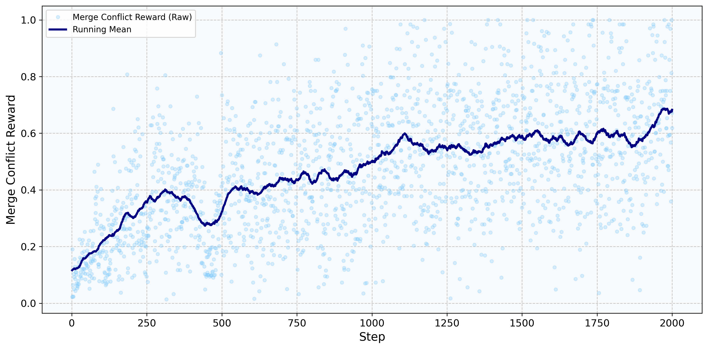
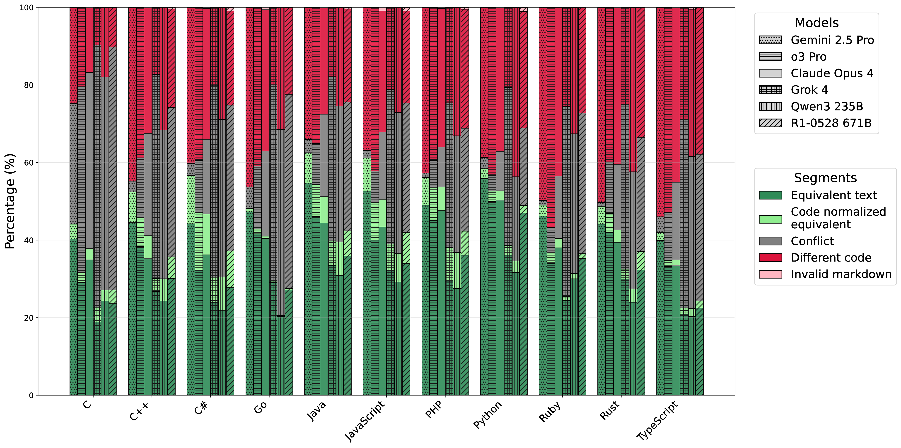

TL;DR. The field is racing to find RLVR tasks that scale. Most existing recipes for code mine GitHub issues and pull requests, but the git history itself contains another rich, mostly untapped source of verifiable rewards. Every merge is a (problem, ground-truth) pair where the developer's committed resolution is the label. The task is built to scale to millions of samples with zero human labeling; even on a small slice of it, our 14B model already rivals frontier commercial LLMs.
Abstract
This paper applies machine learning to the difficult and important task of version control merging. (1) We constructed a dataset, Merge-Bench, of 7,938 real-world merge conflict hunks from 1,439 GitHub repositories. The ground truth is the merge resolution that developers committed to the repository. Our dataset construction methodology is scalable to arbitrary amounts of data since no manual labeling is required. (2) We trained a model, LLMergeJ, to resolve merge conflicts in Java programs. Our approach uses Group Relative Policy Optimization (GRPO), an online reinforcement learning method, to train a Large Language Model. (3) On Java, LLMergeJ with 14B parameters outperforms three commercial LLMs, trailing only Gemini 2.5 Pro. Across 11 programming languages, commercial LLM performance is largely stable from language to language. The best models correctly resolve less than 60% of merge conflicts.
A new RLVR task hiding inside git history
Most RLVR (reinforcement learning with verifiable rewards) work for code today mines GitHub issues and pull requests: SWE-RL, SWE-Gym, and the SWE-Bench-style pipelines all take this route. The git history itself is a parallel and largely untapped source of the same kind of signal. We show that one slice of it, merge conflicts, yields an RLVR task with the properties everyone is searching for:
- Ground truth comes for free. The developer's committed merge resolution is the label. Every merge in every git history on GitHub is a (problem, solution) pair.
- No prompt-side data leakage. A merge conflict (with
<<<<<<</=======/>>>>>>>markers) is reconstructed locally and never appears in any GitHub repo, so it is unlikely to be in pre-training data. - Test-free, programmatic reward. Normalized source-code equivalence to the developer's resolution. No test execution, no test suites, no reward-hacking via deleted tests.
- Robust to ambiguity. When multiple resolutions are valid, GRPO's group-relative advantage assigns small positive reward to "preserve the conflict marker," so the model learns to abstain rather than guess.
- Fully programmatic pipeline. Repository selection → branch enumeration → merge replay → hunk extraction → filtering. No human in the loop, ever.
Merge-Bench's 7,938 hunks are just the slice we filtered for evaluation. The same pipeline pointed at GitHub's 420M+ repositories yields an essentially unbounded RLVR training signal, orthogonal to, and stackable with, issue/PR-based tasks.
Contributions
Human-filter-free SWE-RL
An RL task that combines internet-scale data with zero human filtering, labeling, or manual adjustments.
Test-free evaluation
Bypasses test execution, enabling scalable training on millions of resolved conflicts without reward-hacking vulnerabilities.
Merge-Bench
A scalable benchmark of real-world conflicts resistant to reward hacking and requiring no manual annotation.
LLMergeJ
The first model trained with online RL for merge conflict resolution: 49% exact-match, 59% source-code-match accuracy.
Dataset
Merge-Bench mines real merge conflicts from public GitHub repositories (using the Reaper dataset and top-starred repos for languages not in Reaper), replays each merge with git, and keeps the developer's committed resolution as ground truth. No manual labeling required.
| Language | Hunks | Repos |
|---|---|---|
| C | 630 | 62 |
| C++ | 787 | 150 |
| C# | 777 | 172 |
| Go | 676 | 87 |
| Java | 806 | 44 |
| JavaScript | 759 | 157 |
| PHP | 574 | 109 |
| Python | 761 | 184 |
| Ruby | 653 | 157 |
| Rust | 716 | 147 |
| TypeScript | 799 | 170 |
| Total | 7,938 | 1,439 |
Java Results
LLMergeJ (14B parameters) ranks second on Java merge conflict resolution, outperforming Claude Opus 4, o3 Pro, and Grok 4, all of which have orders of magnitude more parameters.
| Model | Exact text | Code-norm. equiv. | Conflict (no res.) |
|---|---|---|---|
| Gemini 2.5 Pro | 54.7% | 62.5% | 3.4% |
| LLMergeJ 14B (ours) | 48.8% | 58.9% | 5.6% |
| o3 Pro | 46.1% | 54.3% | 10.6% |
| Claude Opus 4 | 44.4% | 51.2% | 21.2% |
| Qwen3-14B SFT (baseline) | 36.6% | 44.7% | 19.2% |
| Grok 4 | 33.4% | 39.7% | 42.4% |

Cross-Language Evaluation
Performance patterns of commercial LLMs are broadly stable across the 11 languages in Merge-Bench. C tends to be the hardest; Java, PHP, and Python are among the easiest. Models become noticeably more conservative on C, preserving conflicts rather than risking incorrect resolutions.

BibTeX
@inproceedings{ScheschE2026MergeBench,
title = {Merge-Bench: Resolve Merge Conflicts with Large Language Models},
author = {Benedikt Schesch and Michael D. Ernst},
booktitle = {Proceedings of the 28th International Conference on Pattern Recognition (ICPR)},
year = {2026}
}